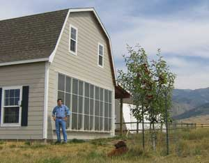

Gary Reysa is a DIY solar expert and regular contributor to Mother Earth News. He’s been tinkering with solar projects for nine years, and he gathers data for every project he builds. We thought you’d like to learn more about the person Mother Earth News turns to when we have questions about home solar projects.
How did you become interested in solar power projects?
I’ve been interested in solar heating projects for quite a while - a lot of people were experimenting with solar in the ’80s, and I always found that interesting but didn’t take on any projects at the time. When we retired to Montana in 2000 - and faced the prospect of bills for 1,800 gallons of propane for a heating season - I thought it was time to get busy on some solar heating!
I’ve found solar thermal projects to be not only helpful on energy bills, but also interesting from a technical and design point of view. There are lots of opportunities for innovation in this field. It’s a great area for “garage inventors,” and I encourage people with an interest to give it a go.
What was your first homemade solar project?
The first real solar project was the thermosyphon solar heating collector for my barn. (Read about it in Build a Simple Solar Heater.) The simplicity, effectiveness and short payback of this heater got me hooked on doing more.
Whenever you build a solar project, you record data and analyze efficiency. How did you develop the knowledge required to do that?
I guess this comes out of a long career in engineering at Boeing. If you can’t measure how well version A of a design does, you don’t know where to go with version B - measuring results is the real key to improving a design. The physics and measurements of solar thermal applications tend to be pretty simple and easy to understand, which is nice.
You have tons of information about solar projects on your website, Build It Solar. What’s your favorite project?
I guess if I had to pick a single project, it would be the solar shop heater. It’s just a set of glazed doors outside of my shop’s overhead door. To let solar heat and light in, you raise the overhead door, and to keep this from being a huge night heat drain, you lower the insulated overhead door - nothing could be simpler.
The combination of solar heating and outstanding lighting that you get from this simple design transforms the shop into a great place to spend time. People look at me strangely when I pick this project as my favorite, but I really appreciate simple things that work well.
What do you think is the most important material on your website?
I have a program called The Half Plan, which is an easy and cost effective way to cut one’s energy consumption and carbon emissions in half (or more). When I read about trillion dollar programs to implement carbon sequestration for coal-fired power plants, I realized that simply not using the energy in the first place is less costly, is less technically risky, and pays a big dividend in saved fuel costs. And, it’s easy to do - we just all need to get busy and do it!
Have you ever built something that didn’t work?
Oh, if I had a nickel for every failure!
Prototypes that don’t work are the way you get to designs that do work. But, you have to set them up so that you learn from each try - this goes back to measuring results.
Do you also experiment with photovoltaic (PV) or wind-generated electricity?
I’m putting in a PV system right now. I’m doing all the work myself and learning a lot - it’s a fascinating technology. From my perspective, the negatives are that there is not much room for innovation and the payback is still not very good.
Why do you prefer to work with solar-heated air and water projects?
I’m a backyard innovator, and solar thermal is an area in which garage inventors can make significant contributions. I can’t really build a better silicon wafer fabricator, but I can work on a better solar air collector. Space conditioning and water heating make up the bulk of home energy use, so solar thermal improvements are the real key to our energy problem - and there is still lots of room for improvement.
For anyone interested in getting involved in solar thermal, I recommend William Shurcliff’s book, Low-Cost Solar Heating - 100 Daring Schemes Tried and Untried. Shurcliff was a fine physicist and author, and this book is a great source of ideas and clear thinking. The book is out of print, but (thanks to Shurcliff) can be downloaded from my website.
What advice do you have for people who are just starting to experiment with solar DIY projects?
Start by doing some small, simple projects or experiments to get a feel for how solar heating works. Try a simple solar cooker, or something such as the Mother Earth News Solar Heat Grabber, or do some of the Educational Page projects on my website. These kinds of things can be built in half a day, and you learn a lot from them. They’re also great projects to do with the kids.
Learn the physics of solar collectors - this is simple stuff, but important. And some things are not intuitive. After you understand what is happening in a collector, it’s a lot easier to know what will work and what won’t.
When you set out to do a serious project that you expect to last for many years, there are a few basic rules about collector design and materials that will hold up in collectors. You can learn about these by reading the projects that others have built and that have performed well and are durable.
|
 GARY REYSA Gary Reysa, DIY solar expert, with the first solar project he built. |
|
|